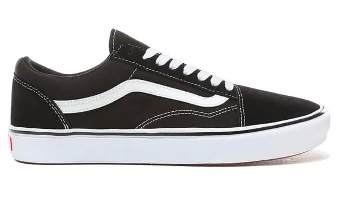
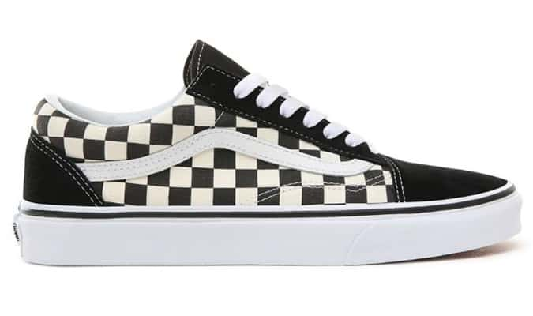
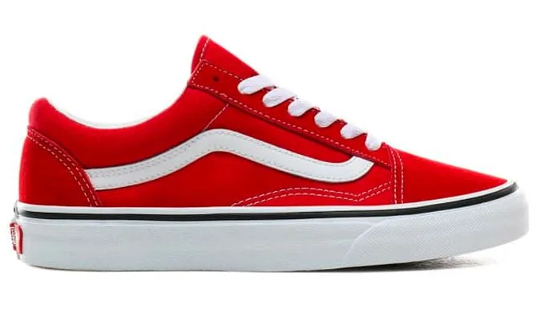
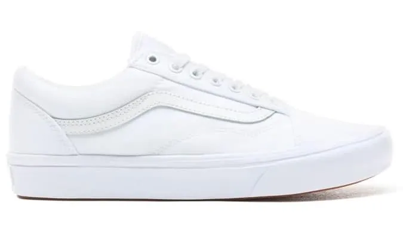
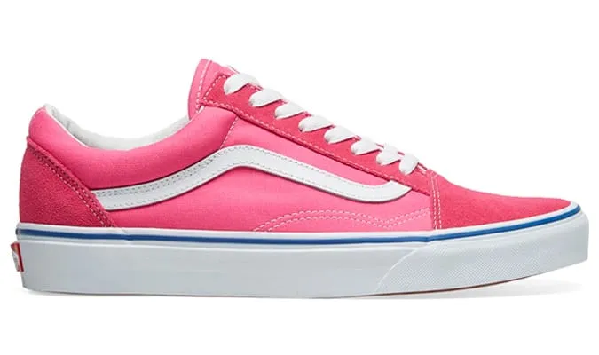
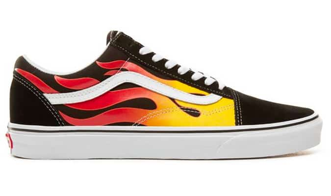
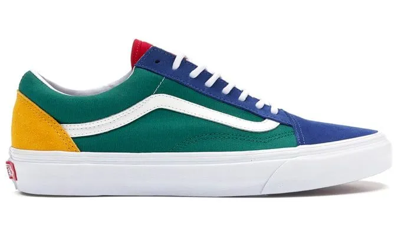
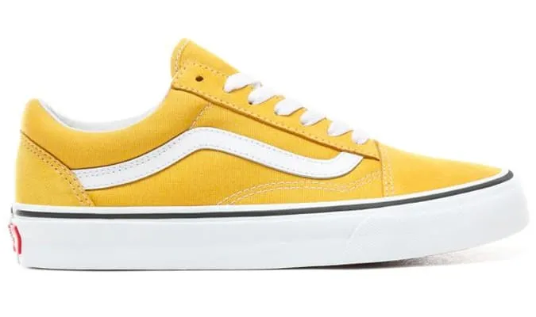

Story and History
The Vans Old Skool, introduced in 1977, holds a special place in skateboarding and streetwear history. Originally
known as the "Style 36," the Old Skool became the first Vans shoe to feature the iconic side stripe, now synonymous
with the brand. With its durable canvas and suede upper, reinforced toecaps, and signature waffle outsole, the Old
Skool quickly became a favorite among skateboarders.
Over the years, the Old Skool transitioned from a performance skate shoe to a cultural icon, embraced by a diverse
range of individuals seeking a blend of style and functionality.
VANS OLD SKOOL PRO

Colorways
The Vans Old Skool has been released in an extensive array of colorways, ranging from classic monochromatic designs to
vibrant and bold collaborations. The simplicity of its silhouette allows for endless variations, making it a
canvas for creative expression.
Collaborations with artists, streetwear labels, and musicians have produced limited-edition colorways,
adding a collector's appeal to the Old Skool. Its timeless design and adaptability contribute to its enduring popularity.







Cultural Impact
The Vans Old Skool has transcended its skateboarding origins to become a cultural phenomenon. Embraced by skateboarders,
musicians, and fashion enthusiasts alike, the Old Skool is celebrated for its authenticity and laid-back style.
Its association with punk rock, street culture, and DIY aesthetics has solidified its place in the world of
alternative fashion. The Old Skool has become a symbol of rebellion, individuality, and a connection to subcultures
around the globe.